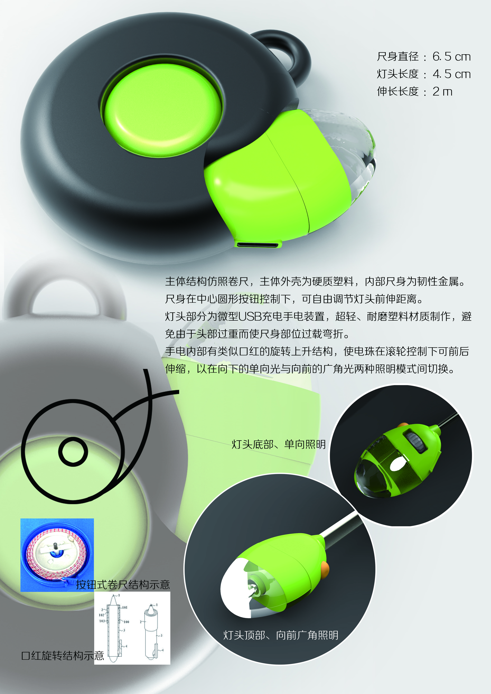

By 关关是暴力兔 Published on 六月 3, 2017蜗壳手电-计算机辅助工业设计课程习作个人设计——卷尺式伸缩手电概念设计产品造型习作PhotoshopRhino小组作业——床头地毯式夜间压力感应控制灯材料遗失描述睡前将鞋子自然脱在地毯上，夜间起床后以鞋子离开地毯为触发点，亮起灯带，便于夜间活动其余时间可以开关控制灯具分工团队头脑风暴 展板制作其他需求调研期间产出内容微信公众号文章链接 https://mp.weixin.qq.com/s/nV3WGNdVQUkPHBBSCEgbjQ